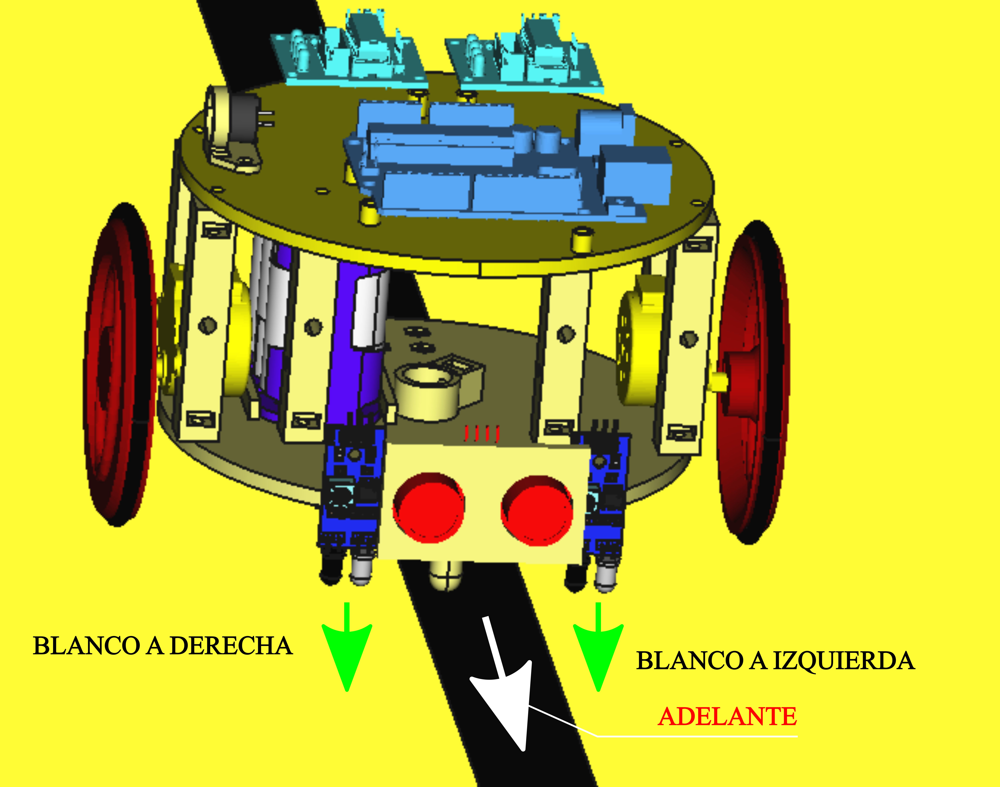
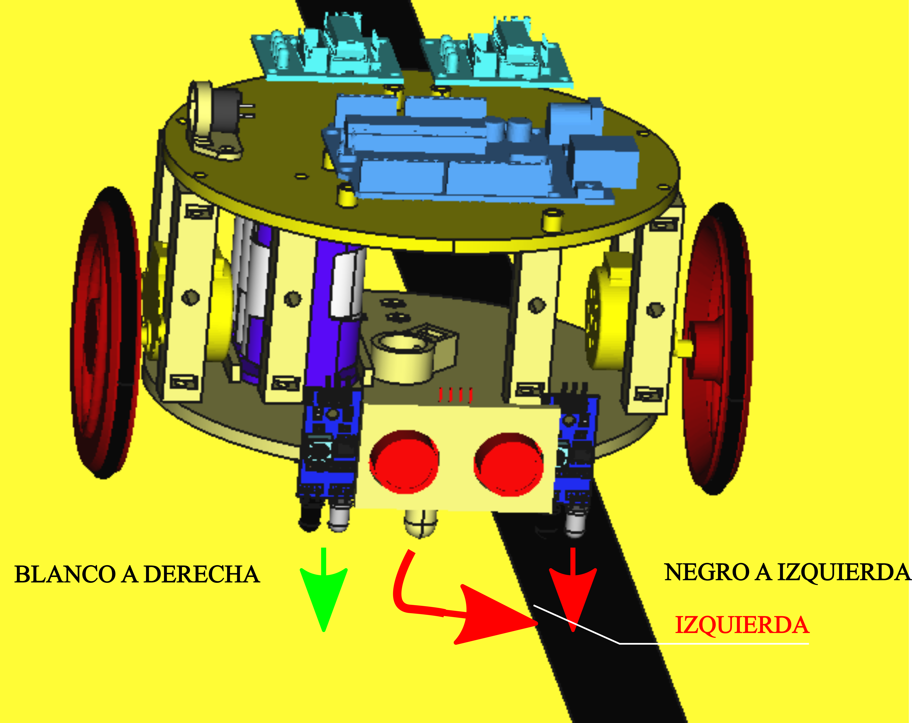
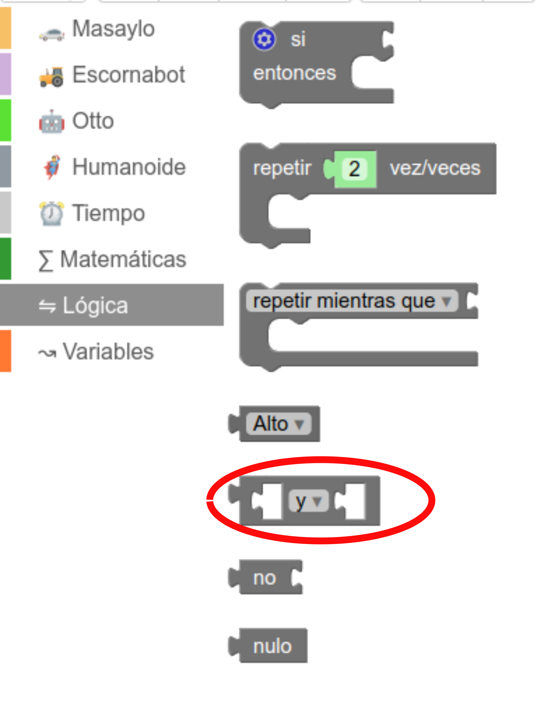
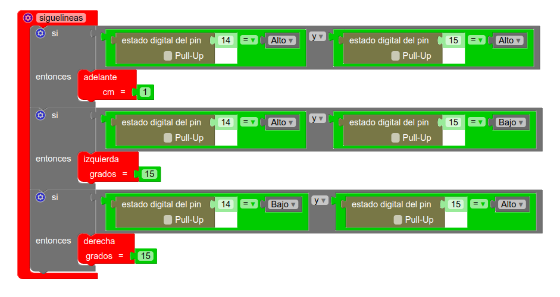
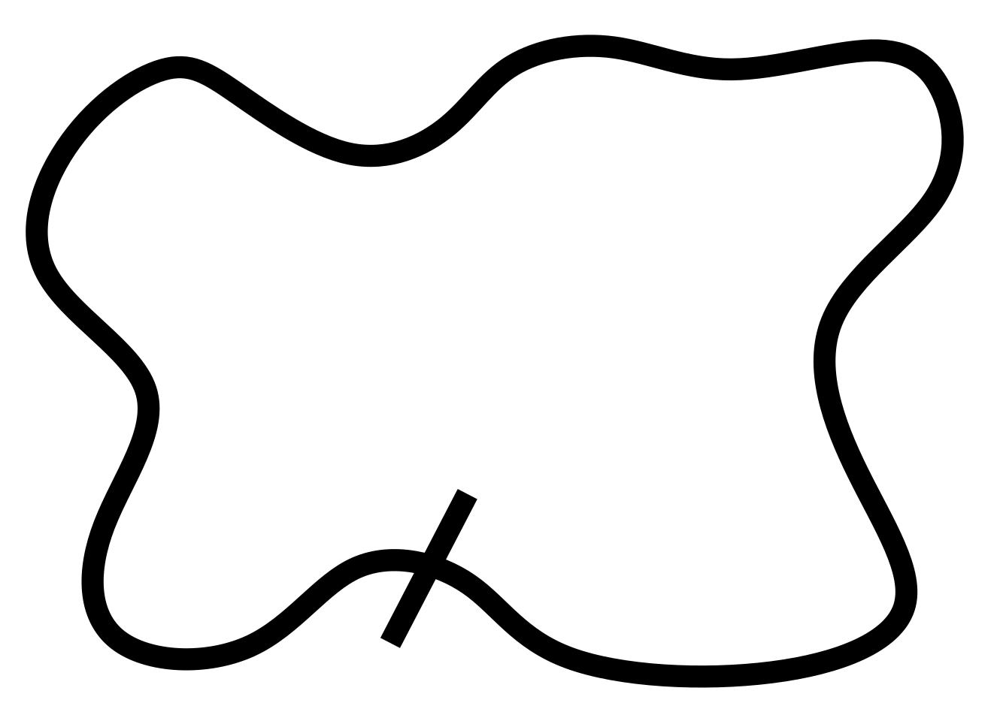

Siguelíneas
Introducción
Una de las posibilidades más atractivas para un robot educativo como el Rupertobot es programarlo como un siguelíneas. Nuestro ruperti cuenta con dos sensores de infrarrojos (sensores IR, para abreviar) conectados en las patillas A0 el derecho, o número 14 si lo tratamos como un pin digital, y A1 (pin digital 15) el izquierdo. Por supuesto, estoy insistiendo mucho en todos estos textos en que tú puedes elegir a qué patillas de tu Arduino conectar cada elemento que quieras incorporar a tu robot, pero te recuerdo que todos los ejemplos de programación que publico por aquí responden a esta organización del conexionado. El caso es que estos sensores, aparte de poder usarlos como sensores de obstáculos, están principalmente orientados a discernir si se encuentran ante una superficie oscura o una superficie clara.
El principio de un robot siguelíneas es que va avanzando sobre una superficie blanca sobre la que hay un camino de color negro. Aquí te dejo un vídeo de ejemplo (no es Rupertobot, sino su primo Masaylo)
Los sensores IR que estamos utilizando dan un "1" lógico cuando están frente a una superficie clara y un "0" cuando "pisan" el color negro.
Principio de funcionamiento
Como ya te he comentado, la clave de este tipo de desafíos radica en los sensores IR, dispuestos a izquierda y a derecha del robot, a suficiente distancia entre ellos para abarcar la superficie blanca del circuito sin llegar a tocar la pista negra, a menos que se desvíe a la izquierda o hacia la derecha.
El principio general del programa es: si pisas blanco a derecha y a izquierda, vas bien. Sigue hacia adelante:

Si, en cambio, nos desviamos por la derecha, el sensor IR de la izquierda (el 15), detectará un color negro. Es hora de girar un poquito A LA IZQUIERDA para retomar nuestro camino.

Por último, el caso contrario: si es el sensor derecho el que detecta un "0" lógico ("Estoy pisando algo negro"), significa que nos estamos yendo por la izquierda. Hora es entonces de corregir el rumbo desviándonos hacia la derecha:

Programa en MasayloBlockly
Partiremos de que ya tienes determinadas las funciones que definen los movimientos básicos del ruperti (lo tienes en los Ejemplos de programación, donde te los puedes descargar). Así no atiborraremos tu pantalla con demasiadas instrucciones, pero recuerda que tu programa ya tiene que tener incorporadas dichas funciones.
Vamos, pues, a definir una nueva función que llamaremos siguelineas, que tendrá en cuenta las tres posibilidades que hemos definido en el apartado anterior.
Como novedad, en esta ocasión tenemos que añadir un operador lógico, que quizás desconozcas si te estás iniciando en el mundillo de la programación.
Un operador lógico es una herramienta que en programación se utiliza para realizar operaciones booleanas con valores y variables. Así podemos comparar dos o más situaciones de un modo lógico: saber si pasan dos cosas a la vez,o reaccionar si pasa una cosa o la otra, incluso puedo comprobar si pasa lo contrario a lo que yo tengo previsto. Como se dice, el movimiento se demuestra andando, así que si eres nueva o nuevo en estas lides, no te preocupes demasiado. Aprenderás con la práctica.
El caso es que en la función siguelineas vamos a ir comparando el valor detectado por cada sensor a la vez. Para ello, nos valdremos del operador lógico y o and (en programación se suele representar como &&), por que necesitamos saber simultáneamente qué detecta cada IR.
| DERECHA | IZQUIERDA | RESULTADO |
| BLANCO | BLANCO | ADELANTE |
| BLANCO | NEGRO | IZQUIERDA |
| NEGRO | BLANCO | DERECHA |
¡Bueno!. Pues vamos al lío. En MasayloBlockly, los operadores lógicos están en el bloque de comandos lógica (ya ves tú qué original).

La función siguelineas, pues, tendrá esta pinta:

Como te explicaba en los ejemplos de Uso de funciones, esta función por sí sola no hace nada hasta que no la llamas en tu programa principal. Una vez creada, puedes llamarla en tu programa, e incluso combinarla con otras funciones (por ejemplo, puedes incluir el uso del sensor US para que detecte obstáculos, en cuyo caso el robot se pararía en mitad del circuito).
Por otro lado, observarás que el comportamiento de tu ruperti variará según los cm que quieres que avance cuando va hacia adelante y del ángulo de desviación que elijas para los giros. Según el tamaño del valor, tu robot será más veloz o más preciso. En tus manos está ir experimentando con esos números.
Una última apreciación: observarás que no he consignado ninguna respuesta si los sensores derecho e izquierdo detectan A LA VEZ un negro. En un circuito sencillo, esto no tendría que pasar nunca, porque no hay bifurcaciones. Si en algún momento sucede, como no está previsto, tu robot simplemente se parará. En casos más complejos, como es el de las bifurcaciones (el camino toma dos ramales), pues tendrás que perfeccionar tu programa, claro. Yo suelo sugerir el uso de variables que lleven la cuenta de cuántas veces me hallo en una bifurcación para que mi ruperti vaya a la derecha o a la izquierda, pero eso ya excede el objetivo de esta humilde web.
Programa en Arduino
Como en otras ocasiones, si tienes cierto manejo en C++ (el lenguaje del IDE de Arduino), te proporciono, no el programa completo, por no ser redundante, pero sí el código correspondiente a la función siguelineas:
void siguelineas() {
if (digitalRead(14) == HIGH & digitalRead(15) == HIGH) {
adelante(1);
}
if (digitalRead(14) == HIGH & digitalRead(15) == LOW) {
izquierda(15);
}
if (digitalRead(14) == LOW & digitalRead(15) == HIGH) {
derecha(15);
}
}
Descarga los programas completos
Programa básico de siguelíneas para MasayloBlockly
Programa básico de siguelíneas para la IDE de Arduino
Imprime tu circuito de prueba
Como no me ha resultado fácil encontrar circuitos simples en Internet para esta práctica, he creado el mío propio, un pdf que puedes descargar libremente (soy así de generoso) e imprimir. Está en tamaño A0, así que tenlo en cuenta si vas a reducirlo, porque el grosor de la línea negra se reducirá también. Haz click en la imagen para descargarlo. Que la fuerza te acompañe.
